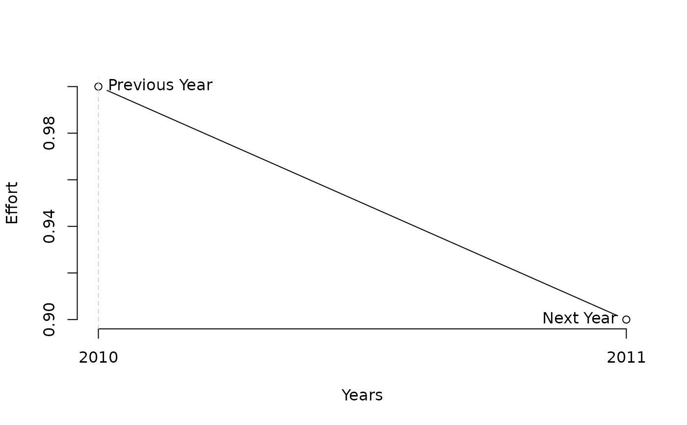

DTe40.RdEffort is adjusted using a simple rule that aims for a specified level of depletion.
DTe40(x, Data, reps = 100, plot = FALSE, alpha = 0.4, LB = 0.9, UB = 1.1)
DTe50(x, Data, reps = 100, plot = FALSE, alpha = 0.5, LB = 0.9, UB = 1.1)A position in the data object
A data object
The number of stochastic samples of the MP recommendation(s)
Logical. Show the plot?
The target level of depletion
The lowest permitted factor of previous fishing effort
The highest permitted factor of previous fishing effort
An object of class Rec-class with the TAE slot(s) populated
The TAE is calculated as:
$$\textrm{TAE}_y = \frac{D}{\alpha} \textrm{TAE}_{y-1}$$
where \(D\) is estimated current level of depletion and \(\alpha\) is argument
alpha specifying the target level of depletion.
The maximum fractional change in TAE is specified with arguments LB and UB
DTe40: Effort is adjusted to reach 40 percent stock depletion
DTe50: Effort is adjusted to reach 50 percent stock depletion
See Online Documentation for correctly rendered equations
DTe40(1, MSEtool::Atlantic_mackerel, plot=TRUE)

#> Effort
#> 0.9